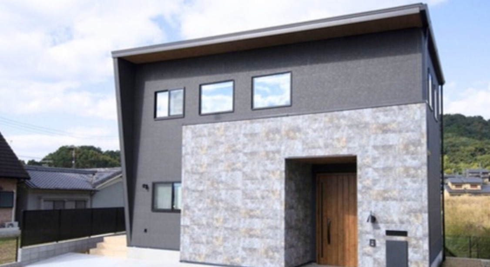

Case 01
シンプルなのに上質。洗練されたホテル空間で過ごす毎日

施主さんがシバ・サンホームに決めた理由
「親身なサポートと信頼の実績で、ぜひお願いしたいと思いました」
Fさん夫妻奥様のご両親もシバ・サンホームで家を建てており、デザイン性や対応の良さに好感を持っていたというFさん夫妻。当初は大阪府内での家づくりを検討し、別の工務店に相談していましたが、育児のサポートを受けやすい奈良でも考えるようになり、シバ・サンホームにも相談することに。奈良県で土地を探しながらプランを検討する中で、空間デザインに妥協できないふたりのこだわりに対し、設計士やコーディネーターが熱意を持って対応し、多彩な提案をしてくれたことで信頼が高まっていきました。無事に納得のいく土地が見つかり、そのまま家づくりを依頼。「細部までこだわりを形にしてもらい、理想の住まいが完成しました」と、満足そうに話してくれました。
Floor Plan間取り図


Interior室内の様子